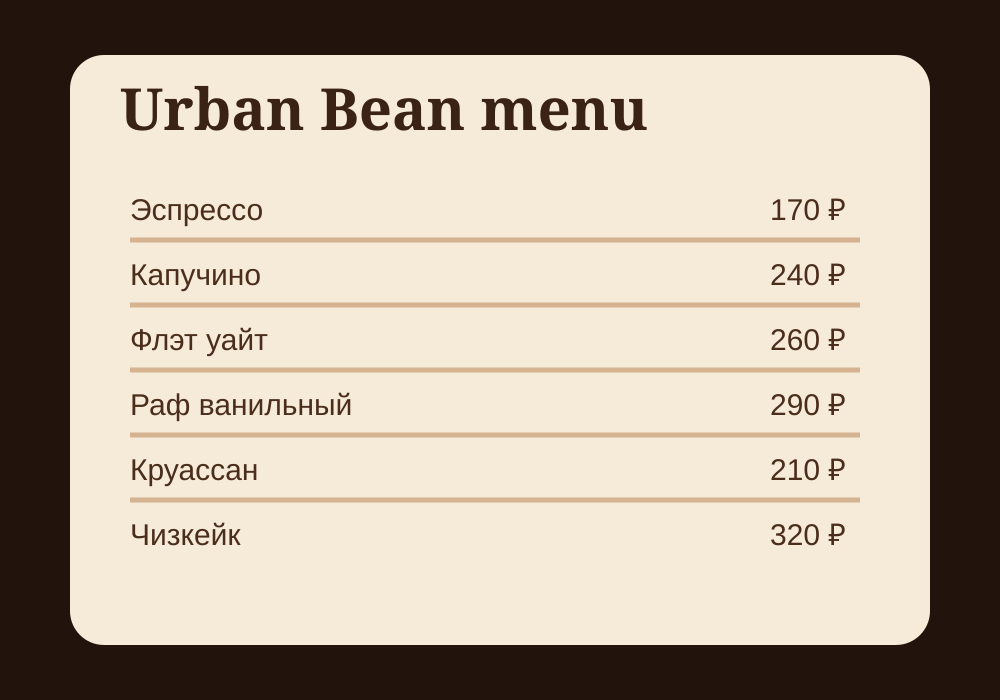

Капучино
Эспрессо, молоко, плотная молочная пена.
240 ₽меню
Страница меню помогает пользователю быстро выбрать напиток и перейти к форме предзаказа.

Оставь предзаказ на главной странице, и бариста подготовит его к указанному времени.
Перейти к форме